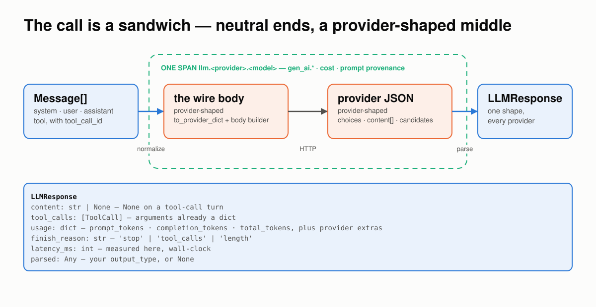
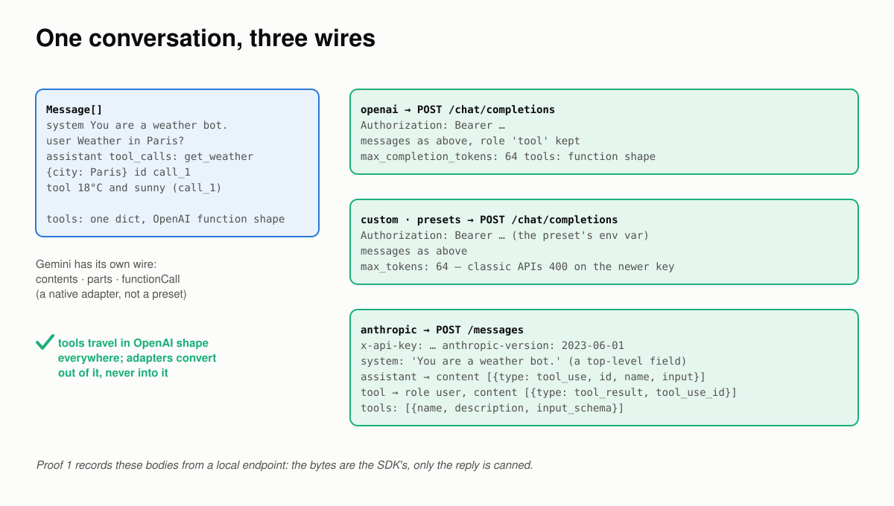
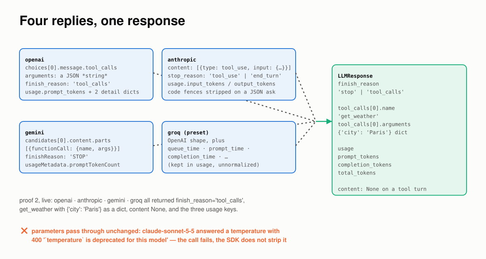
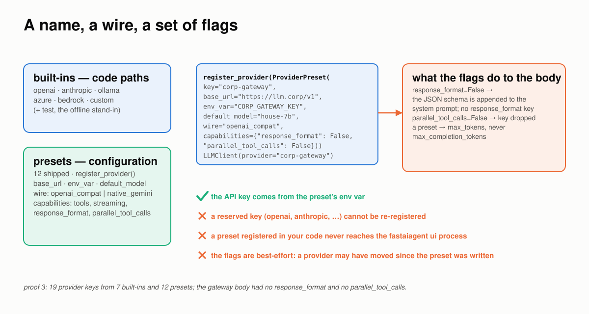
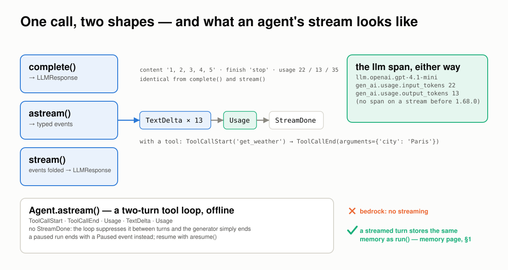
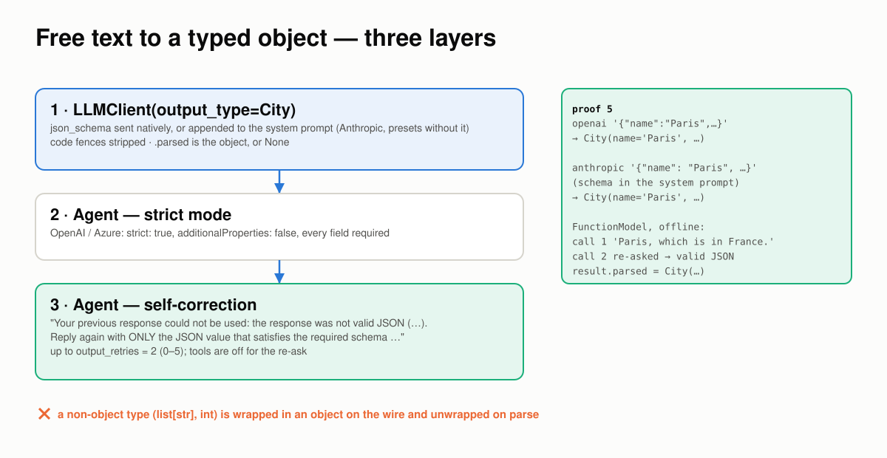
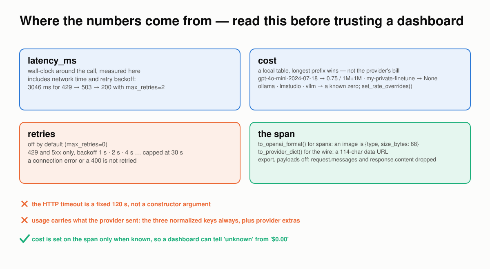
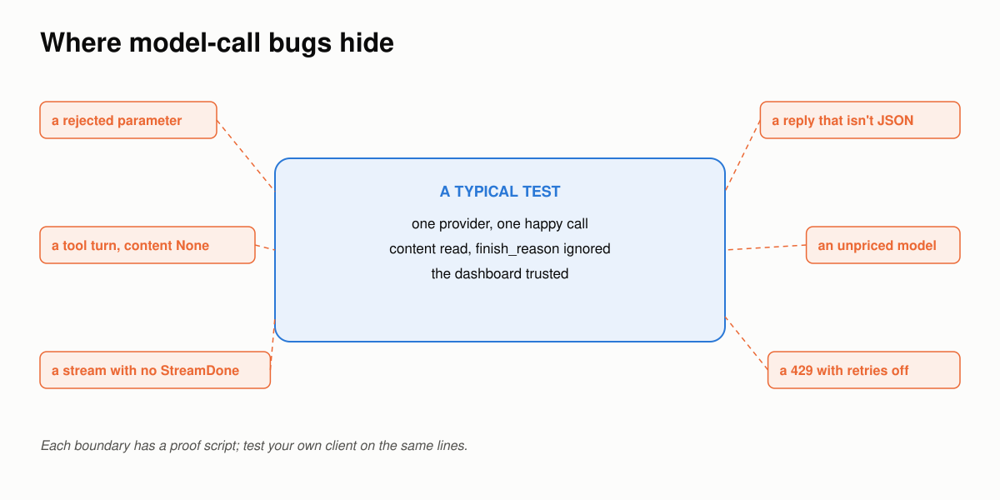

The Model Call Breaks at the Boundaries¶
Six places a model call goes wrong between your messages and the provider, how FastAIAgent holds each one, and a proof you can run for every claim.
Requires FastAIAgent 1.87.0+ · Download this page as a PDF
FastAIAgent already lets you see every model call: each one is an llm.<provider>.<model> span with the request, the reply, the tokens and the cost (see Tracing).
Seeing a call is not the same as trusting what crossed the wire. LLMClient is the one object every agent, chain, judge and simulated user talks to when it needs a model, so it has to hold wherever two things meet:
- your messages and the provider's wire;
- the provider's reply and your code;
- a provider's name and the code that serves it;
- one reply and a stream of it;
- free text and a typed object;
- the call and the numbers you bill and debug by.
Those six boundaries are where model calls go wrong.
This page explains how LLMClient works, one boundary at a time. Each section has a diagram, the rule the SDK follows, a proof, and the code: the SDK source that implements the rule and the script that proves it. The proofs are in examples/llm/proofs/ and run against the published SDK. Three run offline and run in CI: the wire-shape ones point the client at a local endpoint that records the request and answers with a canned reply, so the bodies are the SDK's own bytes and only the model is canned. Three call real providers: OpenAI, Anthropic, Gemini and Groq. Every output and number below came out of one of those runs.
First: the call is a sandwich¶
Both ends are provider-neutral. Only the middle is provider-shaped, and the middle is wrapped in one span.

Message[] in, LLMResponse out. Between them, one request in the provider's shape and one llm.<provider>.<model> span carrying the GenAI attributes, the cost and the prompt provenance.
- Normalize. Your
Messagelist is rendered into the provider's wire body: the OpenAI chat-completions shape for OpenAI and everything OpenAI-compatible, the Messages shape for Anthropic, the native shape for Gemini. - Call. One HTTP request, inside one span with
gen_ai.request.*,gen_ai.usage.*,gen_ai.response.finish_reason, the cost when it is known, and the registry prompt the run is using. - Parse. The provider's JSON becomes one
LLMResponse:content,tool_callswithargumentsalready adict,usagewithprompt_tokensandcompletion_tokens, afinish_reasonfrom one vocabulary,latency_msmeasured on your side, andparsedwhen you asked for a type.
You get all of it from one object:
llm = LLMClient(provider="openai", model="gpt-4.1-mini")
response = llm.complete([UserMessage("Reply with the single word PONG.")])
response.content, response.finish_reason, response.usage, response.latency_ms
The rest of this page is what that sandwich has to get right.
Code: LLMClient is llm/client.py (acomplete, _acomplete_raw); Message and the two serializers are llm/message.py; the span attributes are set_genai_attributes in trace/span.py.
1 · Between your messages and the wire: one conversation, three wires¶
Providers disagree about structure, not just names. Anthropic hoists the system prompt out of the message list, writes an assistant's tool call as a content block, and sends a tool result back as a user turn. OpenAI's newer API wants max_completion_tokens; the classic endpoints every gateway and preset speak want max_tokens.

Four messages and one tool, rendered three ways. Tools travel in OpenAI's function shape and every adapter converts out of it.The rules:
- OpenAI-compatible wires get the messages as they are, with
role: "tool"kept. OpenAI proper getsmax_completion_tokens;customand every preset getmax_tokens, because the classic APIs return 400 on the newer key. - Anthropic gets structural surgery: system messages joined into a top-level
systemfield; an assistant message with tool calls rendered astool_useblocks; a tool message rendered as auserturn holding atool_resultblock. - Tools are passed in OpenAI's function shape everywhere and converted out of it: Anthropic's
input_schema, Gemini'sfunctionDeclarations. One canonical shape, which is whyTool.to_openai_format()is what the agent loop produces whatever the provider. - Auth is per wire:
Authorization: Bearerfor the OpenAI-compatible wires,x-api-keyplusanthropic-versionfor Anthropic.
Proof 1 sends one conversation to a local endpoint three times and prints what arrived:
── provider='openai' → POST /v1/chat/completions
headers : {'authorization': '***'}
keys : ['max_completion_tokens', 'messages', 'model', 'tools']
messages: [{"role": "system", "content": "You are a weather bot."}, {"role": "user", "content": "Weather in Paris?"}, {"role": "assistant", "tool_calls": [{"id": "call_1", "type": "function", "function": {"name": "get_weather", "arguments": "{\"city\": \"Paris\"}"}}]}, {"role": "tool", "tool_call_id": "call_1", "content": "18°C and sunny"}]
── provider='custom' → POST /v1/chat/completions
keys : ['max_tokens', 'messages', 'model', 'tools']
── provider='anthropic' → POST /v1/messages
headers : {'x-api-key': '***', 'anthropic-version': '2023-06-01'}
keys : ['max_tokens', 'messages', 'model', 'system', 'tools']
messages: [{"role": "user", "content": "Weather in Paris?"}, {"role": "assistant", "content": [{"type": "tool_use", "id": "call_1", "name": "get_weather", "input": {"city": "Paris"}}]}, {"role": "user", "content": [{"type": "tool_result", "tool_use_id": "call_1", "content": "18°C and sunny"}]}]
system : 'You are a weather bot.'
tools : [{"name": "get_weather", "description": "Current weather for a city.", "input_schema": {"type": "object", "properties": {"city": {"type": "string"}}, "required": ["city"]}}]
Same four Message objects, same tool dict. The tool-call arguments went out as a JSON string on one wire and as an object on the other; the system prompt was a message on one and a field on the other. None of that reached the code that built the four messages.
Code: _build_openai_body and _build_anthropic_body in llm/client.py; to_provider_dict in llm/message.py; the Gemini wire is llm/providers/gemini.py. The proof is proof_1_wire.py, with the recording endpoint in _recorder.py; tests/test_provider_dispatch.py pins the body rewrites.
2 · Between the reply and your code: four replies, one response¶
Replies disagree as much as requests. The point of the parse step is that your code never finds out.

Four shapes in, one out. The finish reason is translated, the usage keys are renamed, and tool-call arguments are decoded into a dict before you see them.The rules:
- One finish-reason vocabulary:
stop,tool_calls,length. Anthropic'send_turnandtool_use, Gemini'sSTOP, are translated. - One pair of usage keys:
prompt_tokensandcompletion_tokens, plustotal_tokens. Anthropic'sinput_tokensand Gemini'spromptTokenCountare renamed. An OpenAI-compatible provider's extra fields are kept as they came. - Tool-call arguments are a
dict. OpenAI sends them as a JSON string; the parser decodes it, so no caller parses JSON. contentisNoneon a tool turn that carries no text, on every provider.- Parameters pass through unchanged. A provider that rejects one fails the call; the SDK does not strip it.
Proof 2 asks four providers on three wires the same two things:
── a plain reply
provider finish content usage keys (normalized) latency
openai stop PONG ['prompt_tokens', 'completion_tokens', 'total_tokens'] +2 provider-specific 806 ms
anthropic stop PONG ['prompt_tokens', 'completion_tokens', 'total_tokens'] 1043 ms
gemini stop PONG ['prompt_tokens', 'completion_tokens', 'total_tokens'] 474 ms
groq stop PONG ['prompt_tokens', 'completion_tokens', 'total_tokens'] +5 provider-specific 194 ms
── a tool call
provider finish tool arguments type content
openai tool_calls get_weather {'city': 'Paris'} dict None
anthropic tool_calls get_weather {'city': 'Paris'} dict None
gemini tool_calls get_weather {'city': 'Paris'} dict None
groq tool_calls get_weather {'city': 'Paris'} dict None
One lesson from writing this proof is the last rule. Its first version set temperature=0 on every client, and the Anthropic call failed with 400 "temperature is deprecated for this model", from claude-sonnet-5-5. The SDK passed the parameter through, as it should; the provider refused it. A parameter that is fine on one provider can be a hard error on another, and a swap of provider= is a change to test, not a change to assume.
Code: _parse_openai_response and the Anthropic parse in _call_anthropic, in llm/client.py; the Gemini parse is in llm/providers/gemini.py. The proof is proof_2_parse.py (needs the four keys; a missing one skips that provider); the providers are listed in Providers.
3 · Between a provider's name and the code that serves it: a name, a wire, a set of flags¶
There are nineteen provider keys and far fewer implementations. Most of a provider is configuration over a wire that already exists, and a few flags on that configuration change the request without telling you.

Six built-ins have code. Twelve presets are a base URL, an env var, a default model, a wire and some flags. Your gateway is a thirteenth, in five lines.The rules:
- Built-ins have code paths:
openai,anthropic,ollama,azure,bedrock,custom, andtestfor the offline stand-in. Their keys are reserved. - Presets are configuration:
base_url,env_var,default_model, awireofopenai_compatornative_gemini, and capability flags.register_provider()adds one; the API key comes from the preset's env var. - Capabilities are graceful degradation, not documentation. A preset with
response_format: Falsegets the JSON schema appended to its system prompt and noresponse_formatkey. One withparallel_tool_calls: Falsehas the field dropped rather than sent, because some providers return 400 on it. A preset always getsmax_tokens. - The flags are best-effort. A provider may have moved since the preset was written; the live table in Providers is the claim, and a call is the check.
- A preset registered in your code never reaches
fastaiagent ui. That process does not import your application.
Proof 3 lists what ships and then registers a gateway preset pointed at the recording endpoint:
── what ships
built-ins (code paths): ['anthropic', 'azure', 'bedrock', 'custom', 'ollama', 'openai', 'test']
preset wire response_format parallel_tool_calls env var
cerebras openai_compat False False CEREBRAS_API_KEY
deepseek openai_compat native False DEEPSEEK_API_KEY
…
gemini native_gemini native False GEMINI_API_KEY
groq openai_compat native False GROQ_API_KEY
…
perplexity openai_compat False False PERPLEXITY_API_KEY
sambanova openai_compat False False SAMBANOVA_API_KEY
provider keys in total: 19
── a gateway preset in five lines, and what its flags do to the body
POST /v1/chat/completions · headers {'authorization': '***'} (key read from CORP_GATEWAY_KEY)
body keys: ['max_tokens', 'messages', 'model', 'tools']
system message sent:
"Answer briefly.\n\nYou must respond with valid JSON matching this schema ('City'):\n```json\n{\n \"properties\": {\n \"name\": {\n \"title\": \"Name\",\n \"type\": \"string\"\n }, …
response_format in body: False · parallel_tool_calls in body: False · max_tokens key: max_tokens
the canned reply parsed as City: None
The client was asked for a City and for parallel tool calls. The gateway's flags said it could do neither natively, so the schema went into the system prompt and the parallel flag went nowhere. The call succeeded either way; the soft path is why a provider can look "worse at structured output" when it is only taking a different route to it.
Code: the registry and the shipped presets are llm/providers/registry.py and llm/providers/_presets.py; the fallbacks are _capability, _augment_system_for_response_format and _inject_system_text in llm/client.py. The proof is proof_3_presets.py; tests/test_provider_registry.py pins the registry; see Custom Providers and examples/16_providers_groq.py.
4 · Between one reply and a stream of it: the same call, two shapes¶
A stream is not a different call; it is the same call delivered in pieces. The boundary is whether the pieces add up to what the whole would have been, and whether the trace knows the call happened at all.

astream() yields typed events; stream() folds them back into the response complete() returns; both leave the same span. An agent's stream has no StreamDone at all.
The rules:
astream()yields typed events:TextDeltaper piece of text,ToolCallStartandToolCallEndwith the arguments as a dict, oneUsage, andStreamDonelast.stream()folds the events back into anLLMResponsewith the samecontent,finish_reasonand normalized usage keyscomplete()gives.- A streamed call leaves the same
llm.*span, withgen_ai.usage.*on it. Before 1.68.0 it left none, so a streamed run's token total was zero on the plane. - Inside an agent, a tool loop looks like one stream.
Agent.astream()suppressesStreamDonebetween turns, and in 1.87.0 it yields none at the end either: the generator ends. A run that pauses for an approval ends with aPausedevent instead. bedrockhas no streaming.
Proof 4 streams the same prompt it completes, on gpt-4.1-mini, and then streams a two-turn tool loop through an agent on the SDK's FunctionModel:
── complete() and stream() return the same shape
complete() content='1, 2, 3, 4, 5' finish='stop' usage={'prompt_tokens': 22, 'completion_tokens': 13, 'total_tokens': 35, …}
stream() content='1, 2, 3, 4, 5' finish='stop' usage={'prompt_tokens': 22, 'completion_tokens': 13, 'total_tokens': 35}
── astream() is the same call as typed events
event sequence: {'TextDelta': 13, 'Usage': 1, 'StreamDone': 1}
text joined : '1, 2, 3, 4, 5'
last event : StreamDone · usage event: Usage(prompt_tokens=22, completion_tokens=13)
with a tool : [('ToolCallStart', 'get_weather', None), ('ToolCallEnd', 'get_weather', {'city': 'Paris'})]
── both paths leave the same llm span
{'gen_ai.request.model': 'gpt-4.1-mini', 'gen_ai.usage.input_tokens': 22, 'gen_ai.usage.output_tokens': 13, 'gen_ai.response.finish_reason': 'stop'}
{'gen_ai.request.model': 'gpt-4.1-mini', 'gen_ai.usage.input_tokens': 22, 'gen_ai.usage.output_tokens': 13}
── inside an agent, a tool loop is one stream (offline, FunctionModel)
model turns: 2 · events in order: ['ToolCallStart', 'ToolCallEnd', 'Usage', 'TextDelta', 'Usage']
StreamDone events inside the agent stream: 0
Thirteen deltas joined to the same five numbers complete() returned, with the same usage. The streamed span carries the same tokens; it does not carry finish_reason. And the agent's stream, two model turns long, ended with its last Usage and no StreamDone: if your consumer waits for one, it waits forever.
Code: astream, stream and _stream_openai in llm/client.py; the event types are llm/stream.py; the agent loop is stream_tool_loop in agent/executor.py. The proof is proof_4_stream.py (needs OPENAI_API_KEY); tests/test_streaming_llm_span.py pins the span and tests/test_stream_memory_parity.py the memory parity; see Streaming and examples/12_streaming.py.
5 · Between free text and a typed object: three layers¶
A model returns text. Your code wants an object. The distance between them is covered in three layers of increasing strictness, and the third one talks back to the model.

The client sends a schema and parses. The agent sends it strict where the provider allows. When parsing fails, the agent re-asks with the reason in prose.The rules:
output_type=on the client sends ajson_schemaresponse format, natively where the provider supports it and appended to the system prompt where it doesn't, strips code fences, and fills.parsedwith the validated object, orNone.- The agent adds strict mode for OpenAI and Azure:
strict: true,additionalProperties: false, every field required. - The agent re-asks on a parse failure, appending the bad reply and a correction written as prose, with tools off, up to
output_retries(default 2, at most 5). That is why parse errors are sentences: they are fed back to the model. - A non-object type is wrapped in an object on the wire and unwrapped on parse, because a JSON-schema response format needs an object at the top.
Proof 5 asks two providers for a City and then makes an offline model fail once:
── output_type on the client: two providers, one parsed object
openai content='{"name":"Paris","country":"France"}'
parsed =City(name='Paris', country='France') (City)
anthropic content='{"name": "Paris", "country": "France"}'
parsed =City(name='Paris', country='France') (City)
── the agent re-asks when a reply does not parse (offline)
model calls : 2
second call's last message: 'Your previous response could not be used: the response was not valid JSON (Expecting value: line 1 column 1 (char 0)). Reply again with ONLY the JSON ' …
result.parsed : name='Paris' country='France' · output: {"name": "Paris", "country": "France"}
OpenAI enforced the schema on the wire; Anthropic was told the schema in its system prompt. Both came back as the same City. The offline model answered in prose first, was told exactly why that could not be used, and answered in JSON.
Code: OutputSpec in llm/structured.py; acomplete(output_type=) in llm/client.py; _reask_structured and output_retries in agent/agent.py. The proof is proof_5_structured.py; tests/test_structured_output.py pins the layers; see Structured Output and examples/13_structured_output.py.
6 · Between the call and the numbers: read this before trusting a dashboard¶
Latency, cost, retries and the trace are four numbers you act on. Each is computed on your side of the wire, by a rule you can read.

Latency is your wall clock. Cost is a local table. Retries are opt-in and narrow. The span carries a summary, and the export policy decides what leaves.The rules:
- Latency is client-side, wall-clock around the call. It includes network time and, when retries fire, their backoff.
- Cost is not reported by the provider. It is computed from a local price table by longest-prefix match on the model name, so a dated model id resolves to its family's rate. An unknown model yields
None, never a wrong number;ollama,lmstudioandvllmare a known zero. The span getsfastaiagent.cost.total_usdonly when the cost is known. - Retries are off by default, and when enabled fire only on
429and5xx, with backoff of 1 s, 2 s, 4 s, capped at 30 s. A400, or a connection error, is not retried. - The HTTP timeout is a fixed 120 s at the transport, not a constructor argument.
- Two serializers.
to_provider_dict()builds the wire, images as base64.to_openai_format()builds the span's summary, images as a type and a size, so writing a trace never encodes an image or renders a PDF. - Local capture is full fidelity; export is filtered. With
FASTAIAGENT_TRACE_PAYLOADS=0,gen_ai.request.messagesandgen_ai.response.contentare dropped on the way out; the model, the tokens and the finish reason stay.
Proof 6 runs offline against the price table, the recording endpoint and the SDK's TestModel:
── cost: a local table, longest prefix wins
gpt-4o-mini-2024-07-18 1M in + 1M out → 0.75
gpt-4.1-mini 1M in + 1M out → 2.0
claude-sonnet-5-5 1M in + 1M out → 18.0
my-private-finetune 1M in + 1M out → None
ollama / lmstudio / vllm is_local_free → True, a known zero, not an unknown
── retries: off by default; 429 and 5xx only, with backoff
max_retries=2 : 3 requests, content='recorded', latency_ms=3046 (two backoffs: 1 s + 2 s), wall 3.1 s
max_retries=0 : LLMProviderError status=429: OpenAI API error 429: {"error": {"message": "canned 429", "t…
── two serializers: the span summary never carries the image
to_openai_format() (spans, logs): {"role": "user", "content": [{"type": "text", "text": "What is this?"}, {"type": "image", "media_type": "image/png", "size_bytes": 68, "source_url": null}]}
to_provider_dict() (the wire) : image_url = data:image/png;base64,… (114 chars)
── the llm span, and what leaves the machine with FASTAIAGENT_TRACE_PAYLOADS=0
captured locally: ['gen_ai.request.messages', 'gen_ai.request.model', 'gen_ai.response.content', 'gen_ai.response.finish_reason', 'gen_ai.system', 'gen_ai.usage.input_tokens', 'gen_ai.usage.output_tokens']
dropped on export: ['gen_ai.request.messages', 'gen_ai.response.content']
The endpoint answered 429, then 503, then 200; with two retries the call succeeded and its latency carries the three seconds of backoff. With none it raised, with the status on the error. The one-pixel image went to the span as 68 bytes of description and to the wire as a 114-character data URL.
Code: _acomplete_with_retries, _should_retry, _retry_delay and _new_async_client in llm/client.py; compute_cost_usd, _match and LOCAL_FREE_PROVIDERS in _internal/pricing.py; to_openai_format and _summarize_parts in llm/message.py; apply_export_policy and SENSITIVE_ATTR_KEYS in trace/redaction.py. The proof is proof_6_numbers.py; tests/test_retry.py and tests/test_agent_cost.py pin the policies; see Cost tracking and examples/22_llm_parameters.py.
Where model-call bugs hide¶

A typical test makes one happy call to one provider, reads the content, and trusts the dashboard. Model calls break on the lines around that box.If you build or buy a model client, test the boundaries:
- Swap the provider and diff the wire. Send the same tool conversation to two providers and compare what left.
- Ask for a tool call and read
finish_reason,contentand the type ofarguments, on every provider you use. - Register your gateway as a preset and read the body it gets. Where did the schema go?
- Stream the same prompt you complete and compare the folded result. Then stream an agent's tool loop and see how it ends.
- Make a reply that isn't JSON and read the second request. Did anyone tell the model why?
- Price an unknown model, and answer a call with 429. Is the cost
Noneor a number? Did it retry, and did the latency say so?
The proof scripts behind this page run each of those checks.
What LLMClient still won't do for you¶
- Parameters are not vetted per provider.
temperature,top_p,seedand the rest go out as given; a provider that rejects one fails the call. - The timeout is 120 s and not configurable on the client. Wrap the call if you need a shorter one.
- Retries cover
429and5xxonly. A dropped connection raises on the first attempt. - The price table is a list price, not your contract. Override rates with
set_rate_overrides(); an unpriced model staysNone. - Usage extras are not normalized. The three keys are always there; whatever else the provider sent is there too, as it came.
- Capability flags are claims. The call is the check.
Agent.astream()ends withoutStreamDone. Consume until the generator ends, not until a marker.bedrockdoes not stream, and onlyopenai,customand an injected OpenAI client supportdecide().- A preset registered in your code is invisible to
fastaiagent ui.
The point of all of it¶
Every agent, chain, judge and simulated user in FastAIAgent reaches a model through this one object. That is why it has to be both visible and trustworthy: the span makes every call visible; this page walked the six boundaries where it has to hold.
The split between the SDK and the plane stays the same. The SDK makes the call in your process, with your key, to your provider, and writes the span. The plane receives the span, minus whatever the export policy held back. Everything on this page is in the open-source SDK.
Test your own client the same way. The bugs aren't in the happy path; they're on the boundaries.
See also¶
- Concepts & Mental Model: the normalize → call → parse cycle in prose.
- Providers, Custom Providers and OpenAI Decisions API.
- Streaming and Structured Output.
- Cost tracking and Prompt Playground.
- Agent Memory Breaks at the Boundaries: the same approach for memory.